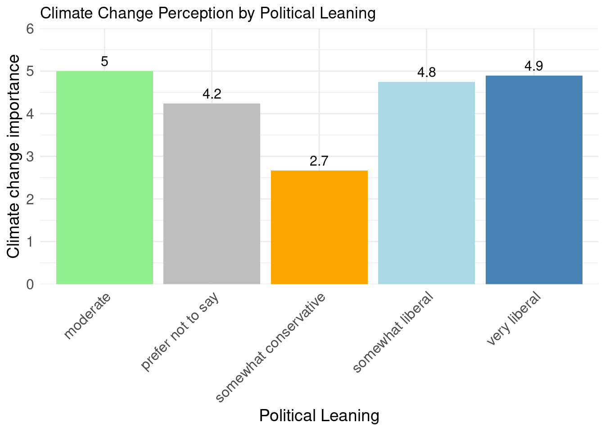

library(readr)
library(dplyr)
library(ggplot2)
library(here)
library(knitr)
library(gt)Capstone Project
“How do individuals of an age between 20-30 in Germany perceive the importance of managing waste compared to other personal actions in mitigating the effects of climate change?”
Introduction
“Climate change is a terrible problem, and it absolutely needs to be solved (Goodell 2010).” This quote by Bill Gates underlines that this topic deserves to be a huge priority.Understanding the perspectives of young adults on their role in addressing climate change is important for creating effective strategies to encourage sustainable behaviors. This study examines individuals aged 20-30 in Germany, focusing on their views on the importance of waste management compared to other personal actions, such as traveling smart, eating sustainably, and conserving energy. By analyzing these perspectives, the study aims to identify potential gaps between awareness and action, offering insights into how to better engage in order to mitigate climate change.
Method
Data for this study was collected through a detailed survey designed to capture both demographic information and perceptions of climate change. The survey included questions on gender and political leaning, and asked 25 participants (13 female and 12 male) to rate their agreement with statements about climate change and personal responsibility on a scale from 1 (strongly disagree) to 5 (strongly agree). Additionally, participants were asked about their behaviors in four key areas: waste management, traveling smart, eating sustainably, and conserving energy. Respondents who recognized the importance of these categories were then asked to allocate 100 tokens among them, reflecting the relative importance they attributed to each in combating climate change. The collected data was cleaned and analyzed to draw meaningful conclusions about the perceptions and behaviors of young adults in Germany.
processed_data_file <- here("data", "processed", "cleaned_capstone_data.csv")
data <- read_csv(processed_data_file)gender_counts <- table(data$gender)
print(gender_counts)
female male
13 12 Results
# Calculate the mean climate change perception by political leaning
political_climate_change <- data |>
group_by(political_leaning) |>
summarize(mean_climate_change = mean(climate_change, na.rm = TRUE))
# Save the summarized data
write_csv(political_climate_change, file = here("data", "final", "political_climate_change.csv"))
# Create a bar plot of mean climate change perception by political leaning with specified colors
political_climate_change_plot <- ggplot(political_climate_change, aes(x = political_leaning, y = mean_climate_change, fill = political_leaning)) +
geom_bar(stat = "identity") +
geom_text(aes(label = round(mean_climate_change, 1)), vjust = -0.5, size = 4) +
theme_minimal() +
labs(title = "Climate Change Perception by Political Leaning",
x = "Political Leaning",
y = "Climate change importance") +
scale_y_continuous(expand = expansion(mult = c(0, 0.2))) +
scale_fill_manual(values = c("moderate" = "lightgreen",
"prefer not to say" = "gray",
"somewhat conservative" = "orange",
"somewhat liberal" = "lightblue",
"very liberal" = "steelblue")) +
theme(axis.text.x = element_text(angle = 45, hjust = 1, size = 12),
axis.text.y = element_text(size = 12),
axis.title.x = element_text(size = 14),
axis.title.y = element_text(size = 14),
legend.position = "none")
# Print the plot
political_climate_change_plot

The results in Figure 1 suggest that individuals with moderate and liberal political leanings (both somewhat and very liberal) tend to perceive climate change as a significant issue, agreeing strongly with the statements that climate change exists, is a threat to society, and causes future damage. On the other hand, those with a somewhat conservative leaning have a more neutral perspective on the statements, showing less agreement with the severity and impact of climate change.The political leaning “conservative” was not represented among the responders. This was also the result of a study published in the Global Environmental Change Magazine (Faria and Eugene 2022).
# Calculate summary statistics for climate change and personal behaviour perception
summary_statistics <- data |>
summarize(
mean_cc = mean(climate_change, na.rm = TRUE),
sd_cc = sd(climate_change, na.rm = TRUE),
median_cc = median(climate_change, na.rm = TRUE),
IQR_cc = IQR(climate_change, na.rm = TRUE),
mean_pb = mean(personal_behaviour, na.rm = TRUE),
sd_pb = sd(personal_behaviour, na.rm = TRUE),
median_pb = median(personal_behaviour, na.rm = TRUE),
IQR_pb = IQR(personal_behaviour, na.rm = TRUE)
)
# Save the summarized data
write_csv(summary_statistics, file = here("data", "final",
"summary_statistics.csv"))
summary_statistics |>
gt() |>
tab_header(
title = "Summary Statistics for Climate Change and Personal Behaviour Perception",
subtitle = "Mean, Standard Deviation, Median, and Interquartile Range"
) |>
cols_label(
mean_cc = "Mean CC",
sd_cc = "SD CC",
median_cc = "Median CC",
mean_pb = "Mean PB",
sd_pb = "SD PB",
median_pb = "Median PB",
) |>
fmt_number(
columns = vars(mean_cc, sd_cc, median_cc, IQR_cc,
mean_pb, sd_pb, median_pb, IQR_pb),
decimals = 2
) |>
tab_source_note(
source_note = "CC: Climate Change Importance\nPB: Importance of Personal Behavior in Mitigating Climate Change"
)| Summary Statistics for Climate Change and Personal Behaviour Perception | |||||||
|---|---|---|---|---|---|---|---|
| Mean, Standard Deviation, Median, and Interquartile Range | |||||||
| Mean CC | SD CC | Median CC | IQR_cc | Mean PB | SD PB | Median PB | IQR_pb |
| 4.59 | 0.68 | 5.00 | 0.67 | 3.40 | 0.97 | 3.33 | 1.00 |
| CC: Climate Change Importance PB: Importance of Personal Behavior in Mitigating Climate Change | |||||||
The results shown in Table 1 demonstrate a distinct difference between the perception of climate change as a critical issue and the belief in the impact of personal behavior on mitigating climate change. Respondents strongly acknowledge the importance of climate change, as indicated by high mean and median scores with low variability. However, there is less agreement regarding the significance of individual actions, as reflected by more moderate mean and median scores and a higher standard deviation. This indicates that while awareness of climate change is high, there is less certainty about the effectiveness of personal behavior in addressing it. The moderate scores and higher variability suggest diverse opinions on the extent to which personal actions can influence. On the contrary, a survey of the Deutsche Bundesbank says that individuals can help mitigate climate change directly by changing their everyday activities and consumption behavior (Bernard, Tzamourani, and Weber 2022).
# Filter data to only include participants who filled out the weightings
data_filtered <- data |>
filter(!is.na(waste_tokens) & !is.na(travel_tokens) & !is.na(eat_tokens) & !is.na(energy_tokens))
# Calculate the mean scores for each behavior category
behavior_scores <- data_filtered |>
summarize(
mean_waste = mean(waste_average, na.rm = TRUE),
mean_travel = mean(travel_average, na.rm = TRUE),
mean_eat = mean(eat_average, na.rm = TRUE),
mean_energy = mean(energy_average, na.rm = TRUE)
)
# Extract weightings
weightings <- data_filtered |>
summarize(
mean_waste_tokens = mean(waste_tokens, na.rm = TRUE),
mean_travel_tokens = mean(travel_tokens, na.rm = TRUE),
mean_eat_tokens = mean(eat_tokens, na.rm = TRUE),
mean_energy_tokens = mean(energy_tokens, na.rm = TRUE)
)
# Calculate correlations
correlations <- data.frame(
Category = c("Waste Management", "Travel Smart", "Eat Sustainable", "Conserve Energy"),
Correlation = c(
cor(data_filtered$waste_average, data_filtered$waste_tokens, use = "complete.obs"),
cor(data_filtered$travel_average, data_filtered$travel_tokens, use = "complete.obs"),
cor(data_filtered$eat_average, data_filtered$eat_tokens, use = "complete.obs"),
cor(data_filtered$energy_average, data_filtered$energy_tokens, use = "complete.obs")
)
)
# Print the correlations
correlations |>
gt() |>
tab_header(
title = "Correlation between Behavior Scores and Importance Weightings",
subtitle = "Correlation Coefficients for Each Category"
) |>
cols_label(
Category = "Category",
Correlation = "Correlation Coefficient"
) |>
fmt_number(
columns = vars(Correlation),
decimals = 2
)
# Save the correlations data
write_csv(correlations, file = here("data", "final", "correlations.csv"))| Correlation between Behavior Scores and Importance Weightings | |
|---|---|
| Correlation Coefficients for Each Category | |
| Category | Correlation Coefficient |
| Waste Management | −0.01 |
| Travel Smart | 0.00 |
| Eat Sustainable | 0.55 |
| Conserve Energy | −0.24 |
scatterplot_waste <- ggplot(data_filtered, aes(x = waste_average, y = waste_tokens)) +
geom_point() +
geom_smooth(method = "lm", se = FALSE) +
theme_minimal() +
labs(title = "Waste Management: Behavior Score vs. Importance Weighting",
x = "Behavior Score",
y = "Importance Weighting")
scatterplot_waste`geom_smooth()` using formula = 'y ~ x'scatterplot_travel <- ggplot(data_filtered, aes(x = travel_average, y = travel_tokens)) +
geom_point() +
geom_smooth(method = "lm", se = FALSE) +
theme_minimal() +
labs(title = "Travel Smart: Behavior Score vs. Importance Weighting",
x = "Behavior Score",
y = "Importance Weighting")
scatterplot_travel`geom_smooth()` using formula = 'y ~ x'scatterplot_eat <- ggplot(data_filtered, aes(x = eat_average, y = eat_tokens)) +
geom_point() +
geom_smooth(method = "lm", se = FALSE) +
theme_minimal() +
labs(title = "Eat Sustainable: Behavior Score vs. Importance Weighting",
x = "Behavior Score",
y = "Importance Weighting")
scatterplot_eat`geom_smooth()` using formula = 'y ~ x'scatterplot_energy <- ggplot(data_filtered, aes(x = energy_average, y = energy_tokens)) +
geom_point() +
geom_smooth(method = "lm", se = FALSE) +
theme_minimal() +
labs(title = "Conserve Energy: Behavior Score vs. Importance Weighting",
x = "Behavior Score",
y = "Importance Weighting")
scatterplot_energy`geom_smooth()` using formula = 'y ~ x'# Save the filtered data
write_csv(data_filtered, file = here("data", "final", "data_scatterenergy.csv"))The scatterplots Figure 2, Figure 3, Figure 4 and Figure 5 in and correlation coefficients from Table 2 reveal varying degrees of alignment between participants’ climate-friendly behaviors and the importance they assign to these behaviors in mitigating climate change:
Waste Management and Travel Smart: There is no significant correlation, indicating a disconnect between behavior and perceived importance in these categories.
Eat Sustainable: There is a moderate positive correlation, suggesting better alignment between behavior and perceived importance.
Conserve Energy: There is a weak negative correlation, which is unexpected and indicates that participants who conserve energy might not view it as critically important in addressing climate change.
# Filter data to only include participants who filled out the weightings
data_filtered <- data |>
filter(!is.na(waste_tokens))
# Create a histogram of the weightings for Waste Management
histogram_wm <- ggplot(data_filtered, aes(x = waste_tokens)) +
geom_histogram(binwidth = 5, fill = "steelblue", color = "black") +
theme_minimal() +
labs(title = "Importance of Waste Management in Combating Climate Change",
x = "Weighting (Tokens)",
y = "Frequency")
# Print the histogram
histogram_wm
# Save the filtered data for waste management weightings
write_csv(data_filtered, file = here("data", "final", "waste_management_weightings.csv"))The distribution shown in Figure 6 indicates that while Waste Management is considered an important aspect of combating climate change by many participants, it is not uniformly seen as the most critical factor. The majority of participants assigned a moderate level of importance (10-30 tokens), reflecting a balanced view that recognizes the significance of Waste Management without overemphasizing it compared to other categories. The presence of a few high outliers suggests that there is a subset of participants who believe strongly in the critical role of Waste Management.
Conclusion
To sum up the report the key findings are listed in te following:
Most participants agree that climate change is a significant threat and recognize the need for action.
Participants have mixed views on the importance of their personal behavior in addressing climate change, with some expressing strong commitment and others less so.
Political leaning impacts perceptions, with more liberal participants showing higher concern for climate change and personal responsibility compared to conservative participants.
There is a gap between the high importance assigned to waste management and other sustainable actions and the actual engagement in these behaviors.
Waste management is seen as important, with participants allocating a portion of their tokens to this category, although not significantly more than to other categories.
References
Bernard, Rene, Panagiota Tzamourani, and Michael Weber. 2022. “Climate Change and Individual Behavior.” Deutsche Bundesbank. https://www.bundesbank.de/resource/blob/844910/0db1772488c5d7ee473c390d547b0ac7/mL/2022-02-11-dkp-01-data.pdf.
Faria, Amy, and Y.Chan Eugene. 2022. “Political Ideology and Climate Change-Mitigating Behaviors: Insights from Fixed World Beliefs.” Global Environment Change Volume 72.
Goodell, Jeff. 2010. “Q&A: Bill Gates on How to Stop Global Warming.” RollingStone, December. https://www.rollingstone.com/politics/politics-news/qa-bill-gates-on-how-to-stop-global-warming-184743/.